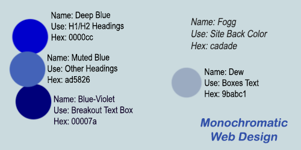
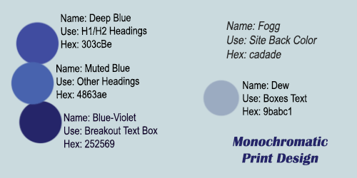
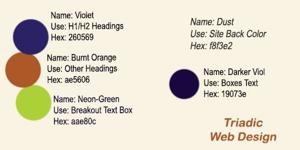
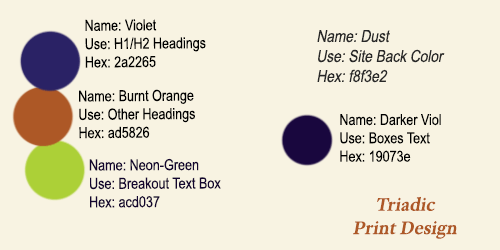

Color Palette Overviews
Color themes can vary widely depending on the type of output, the audience, and
the emotions the client aims to convey. We can offer suggestions and show examples,
but we should also expect alterations based on a client’s or target audience’s input.
Monochromatic Theme

A monochromatic theme is often used to emphasize form and structure without the
distraction of color. This design type might be used for a corporate website.
We selected blue because it can be tricky to convert to print with a CMYK color palette.

Notice the shift in colors acceptable for print. The design doesn't look as vibrant
as the digital web design. When designing a final palette of colors, ensure that all
output types are illustrated as expected.
Triadic Theme
Another example of a color design is the triadic palette. This would be used for
a more energetic site, maybe hosting a game or representing a team.

The focus will be on text boxes that contain key information, such as
a current contest or a set of game schedules.

In this example, the print version has slightly different colors but
is very close to the original website design.
Complementary Theme
The next example is a Complementary digital web design. This type of design is more typical
in art but can be an option for a youthful, vibrant website. It is typically not recommended for print.

Learn More
About Color Terms and other themes: Link to Theory
Color website layout article: Color Explosion or Not: > Link to Article
Contact us at: tcgrowth@outlook.com